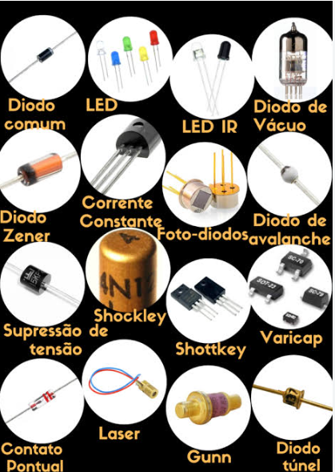
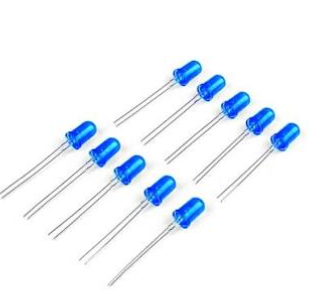
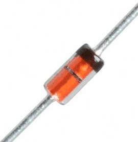

Diodo retificador
É usado principalmente em fontes de alimentação. Ele permite aproveitar a corrente em um sentido e ajuda a converter corrente alternada em corrente contínua pulsante.
Os diodos são componentes importantes na eletrônica. Eles ajudam a controlar o sentido da corrente elétrica e são usados em fontes de alimentação, iluminação e circuitos de proteção.

Imagem retirada do documento de referência do projeto.
O diodo é um componente eletrônico feito de materiais semicondutores. Sua principal característica é permitir que a corrente elétrica passe com mais facilidade em um sentido do que no sentido contrário.
Por causa disso, ele pode ser usado para direcionar a corrente e ajudar a proteger outros componentes de um circuito.

Imagem retirada do documento de referência do projeto.
O diodo possui dois terminais: ânodo e cátodo. Quando está ligado no sentido correto, chamado de polarização direta, ele permite a passagem de corrente. Quando a ligação é invertida, chamada de polarização inversa, ele normalmente bloqueia a corrente.
Isso não significa que qualquer diodo suporte qualquer tensão. Se os limites do componente forem ultrapassados, ele pode ser danificado.
É usado principalmente em fontes de alimentação. Ele permite aproveitar a corrente em um sentido e ajuda a converter corrente alternada em corrente contínua pulsante.

O LED emite luz quando a corrente passa por ele no sentido adequado. Está presente em lâmpadas, telas, indicadores e muitos aparelhos eletrônicos.

O Zener pode trabalhar em uma região específica de polarização inversa para ajudar a limitar ou estabilizar a tensão em determinados circuitos.
O fotodiodo responde à luz e transforma essa informação em um sinal elétrico. É utilizado em sensores e em sistemas que recebem sinais luminosos.

Esse tipo de diodo costuma ter uma queda de tensão direta menor e pode trabalhar com comutação rápida, sendo útil em alguns circuitos eletrônicos.
As fotos dos componentes foram retiradas do documento de referência do projeto.
A retificação é o processo de converter corrente alternada (CA), que muda de sentido, em corrente contínua pulsante. Para isso, são usados diodos em circuitos chamados retificadores.
Usa um diodo para deixar passar um dos semiciclos da corrente alternada e bloquear o outro. É um circuito simples, mas aproveita apenas parte da onda.
Aproveita os dois semiciclos da corrente alternada. Uma maneira comum é usar quatro diodos ligados em uma ponte retificadora.
Depois da retificação, a tensão ainda pode variar. Um capacitor de filtragem ajuda a reduzir essas variações, e outros componentes podem ser usados para regular a tensão de saída.
Os diodos fazem parte de muitos aparelhos do dia a dia. Alguns exemplos são:
No início do século XX, alguns rádios usavam um cristal de galena e um fio metálico fino para detectar sinais de rádio. Esse sistema funcionava sem pilhas ou tomada, aproveitando as propriedades do material para separar o sinal recebido.
Material de referência do projeto: Diodos e retificação.
O grupo deve incluir os livros ou artigos que realmente consultou no trabalho.